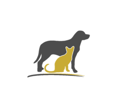

CADA VEZ MAS AUMENTA EL ABANDONO DE LOS PERROS Y GATOS,E INCLUSO CRECEN CON UNA CALIDAD DE VIDA PESIMA, TANTO QUE MUCHOS DE ELLOS SON SACRIFICADOS.
¿QUE ESPERAS PARA ADOPTAR?


:quality(75)/cloudfront-us-east-1.images.arcpublishing.com/elcomercio/527LV7GYV5GIVFUNIUEYQ64QNY.jpg)



¿QUIENES SOMOS?
MISION
-
ES UNA PROBLEMATICA QUE SE VIVE A DIARIO, POR TAL RAZON ADOPT YOUR FRIEND SE ENCARGA DE DARLES LA OPORTUNIDAD A LAS MASCOTAS PARA QUE PUEDAN TENER UN BUEN ACOMPAÑAMIENTO SANO Y SALUDABLE
VISION
-
CON EL PROPOSITO DE QUE PUEDAN ADOPTAR MASCOTAS ABANDONADAS POR MEDIO DE ESTE APLICATIVO WEB
-
PARA QUE TENGA TANTO EL CLIENTE COMO LA MASCOTA UN BUEN ACOMPAÑAMIENTO MUTUO Y DISMINUYA LA MALA CALIDAD DE VIDA , LA MUERTE EN DIVERSOS CASOS Y LOS MALTRATOS HACIA ELLOS.